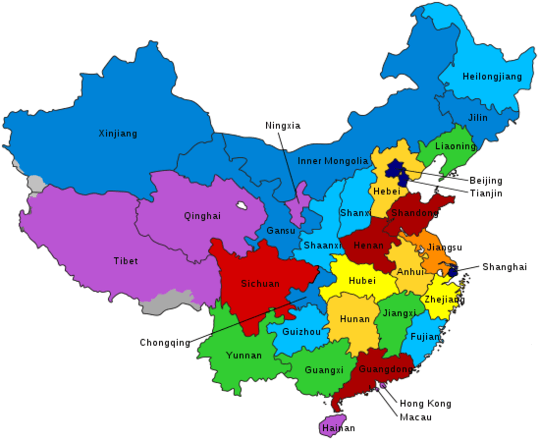

|  |
Gongfu a fost inițial un mod regional de preparare a ceaiului oolong în provinciile Guangdong (în
special în
orașul Chaozhou) și Fujian, ambele din sudul Chinei, dar în mare parte necunoscut în restul țării. În anii 1970, în Taiwan a fost dezvoltat un stil reformat de gongfu, adăugând noi etape, unelte și elemente estetice. În această formă, gongfu - acum cunoscut oficial sub numele de arta chineză a ceaiului (Zhōnghuá cháyì, 中华茶艺/中華茶藝) În China și Taiwan, acest gongfu modernizat a devenit un fel de simbol național, la fel ca chadō în Japonia. În anii 2000, gongfu a început să se răspândească în conștiința și utilizarea băutorilor de ceai la nivel internațional. Totuși, "stilul Chaozhou", cel original dar mai putin ostentativ, a rămas până acum o practică relativ rară. |